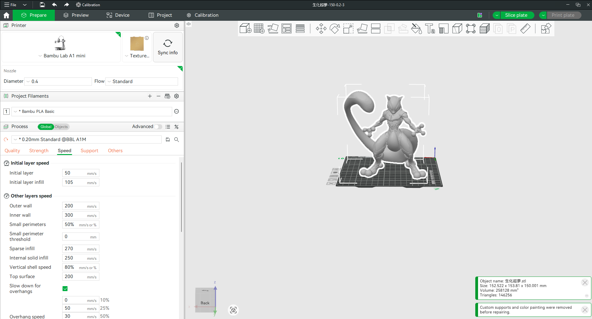
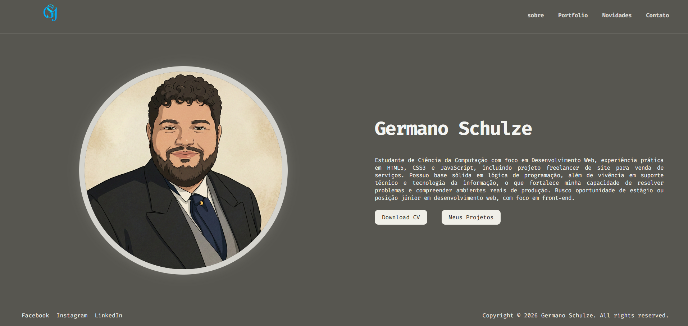

Meu novo hobbie: aprendendo impressao 3D
Uma fase nova de aprendizado, experimentacao e ideias para explorar criatividade e modelagem 3D.
Recentemente comecei a aprender a mexer com impressora 3D. Sempre tive curiosidade sobre como transformar uma ideia digital em algo fisico, e agora estou vivendo esse processo na pratica.
Essa fase inicial esta sendo importante para entender cada detalhe do processo, desde a preparacao do arquivo ate o acabamento final das pecas.

Neste momento, meu foco e ganhar base tecnica: calibracao, configuracao e testes para melhorar cada impressao. Estou construindo essa etapa com paciencia para evoluir com consistencia.
Com essa experiencia, quero avancar para projetos mais criativos, combinando estudo continuo, tentativa e erro e aplicacoes praticas no dia a dia.

Meu proximo objetivo e iniciar a modelagem 3D com mais seguranca. Assim, vou conseguir criar minhas proprias pecas e, ao mesmo tempo, transformar ideias em resultados praticos.
A ideia e continuar evoluindo para desenvolver projetos cada vez mais completos, combinando design e construcao pratica.